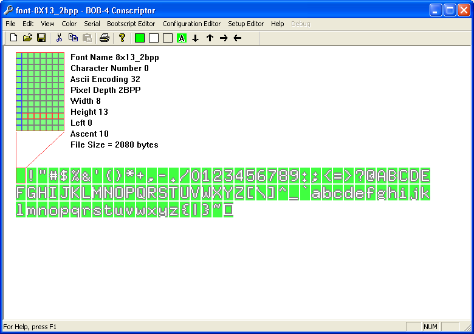
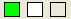

There four
ways to start editing a font: You can create a new font file, edit an existing
font file, import a bitmap image file, or import a BDF (Bitmap Distribution
Format) font file. The “Examples” subdirectory in the BOB-4 Conscriptor
application directory (where this program is installed on your PC) contains
examples of BOB-4 font files and BDF files that can be imported and edited.
See FontFormat.txt for a detailed
technical explanation of font parameters.
Editing A
Font

The Font Editor window displays an expanded view of the character glyph currently selected for editing, as well as detailed font and character information, and a smaller representation of the entire character set. Left-clicking in the character set selects a new character for editing.
For 2bpp (bits per pixel) fonts, green represents transparent pixels, grey represents halftone pixels, and white represents white pixels. The preceeding statement is true only for render mode 65, which is the default setting. BOB-4 is capable of rendering these pixels on screen in many different ways. See m command in the BOB-4 Application Guide. For 1bpp fonts, halftone pixel color is not available.
Left-click a pixel to change that pixel to the currently selected color. Current color can be changed by selecting a new color from the Color menu or left-clicking the desired color on the tool bar:

A halftone outline may be added to 2bpp fonts by selecting Edit-->Insert-->Outline or clicking the Outline button:

The outline operation is
global, affecting all characters in the font. There is no corresponding undo
function. Automatically generated outlines are subject to BOB-4 character rendering
options, as mentioned above.
All pixels within
the current character cell may be shifted en masse by clicking one
of the arrow buttons or using the Edit-->Move menu.
The horizontal row of pixels outlined in red indicates the font's “Ascent” parameter. The vertical column of pixels outlined in blue indicates the “Left" parameter for the selected character. Ascent and Left may be edited by right-clicking on the desired pixel row or column.